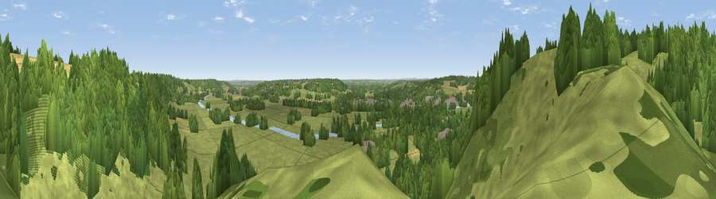

Viewpoint near Whitchurch-on-Thames
#30871 in England · top 35% of its area beats it · near Whitchurch-on-ThamesThe view, rendered

A 360° render of this exact spot computed from the terrain model, tree cover and land cover — summer colours, afternoon light, calibrated against photographs of famous viewpoints. Real trees, hedges and buildings will differ in detail.
The panorama
Grey silhouette: terrain skyline in each direction (720 bearings, Earth curvature and refraction included). Dashed green: skyline with trees (+15 m) and buildings (+8 m) as obstacles. Blue strip: how far the ground is visible on each bearing.
Where the view opens
Wedge length = distance to the farthest visible ground on that bearing (vegetation-aware). Rings at 10, 25 and 50 km.
What fills the view
48% grassland · 45% woodland · 4% cropland · 2% built-up ·
Angular shares of the visible panorama (visual magnitude), not map area. Landscape diversity 0.42 (0–1 Shannon).
Key numbers
More beautiful places nearby
The staircase of upgrades: each row has a higher view potential than everything closer. Driving times are estimates from straight-line distance, calibrated against real road routing — check an actual route before setting out.
| Place | Direction | Drive | Score |
|---|---|---|---|
| Viewpoint near Whitchurch-on-Thames | WNW · 0 km | ~1 min | 55.0 |
| Viewpoint near Streatley | WNW · 6 km | ~13 min | 56.7 |
| Viewpoint near Streatley | WNW · 6 km | ~13 min | 57.3 |
| Viewpoint near Moulsford | NW · 8 km | ~16 min | 58.8 |
| Viewpoint near Compton | WNW · 11 km | ~21 min | 64.1 |
| Viewpoint near Cookley Green | NNE · 14 km | ~26 min | 64.3 |
| Viewpoint near Cookley Green | NNE · 15 km | ~27 min | 68.5 |
| Round Hill | NNW · 17 km | ~29 min | 70.1 |
51.49484, -1.07769 · source: screening · position refined by local search. Computed location — check access rights before visiting.